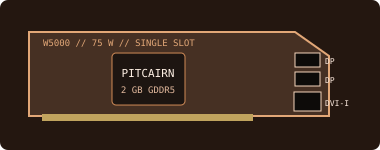

[ LEGACY WORKSTATION GRAPHICS ]
AMD FirePro W5000 2 GB
A 2012 single-slot professional card for CAD and workstation display workloads, based on the Pitcairn generation.

Recorded specifications
| GPU | Pitcairn-class GCN; 768 stream processors. |
|---|---|
| Memory | 2 GB GDDR5, 256-bit memory interface. |
| Interface & power | PCI Express 3.0 x16; 75 W maximum board-power class; slot-powered, without auxiliary power input. |
| Outputs | Two DisplayPort 1.2 and one dual-link DVI-I. Analog display operation requires a compatible DVI-I connection/adapter. |
| Physical fit | Single-slot, full-height professional board class. Verify card length, bracket and neighboring-slot clearance for the precise card revision. |
Workstation & driver compatibility
Designed for professional graphics applications of its era. It requires a PCIe x16 slot, a standard full-height bracket and adequate case airflow; its 75 W class avoids an auxiliary plug on reference boards.
- Install a legacy AMD FirePro driver whose published support list includes W5000 and the target OS. A current consumer Radeon package may omit it.
- Consult the workstation maker's certified configuration and the software vendor's historical certification matrix before relying on the card for a production CAD workflow.
- Check DVI-I adapter type, active display mode limits, fan condition and exact connector/bracket revision before installation.
Sources & further reading
- AMD — previous drivers and product supportOfficial legacy package archive; verify W5000 and OS in the package's supported-device list.
- AMD — Radeon Pro Software for Enterprise 21.Q2 release notesAMD professional-driver support documentation and operating-system notes.
- TechPowerUp GPU Database — FirePro W5000Independent model-specification cross-check; OEM product labels/manuals take precedence.
Reference board details do not guarantee every OEM board's dimensions, clock or output implementation; measure the specimen.